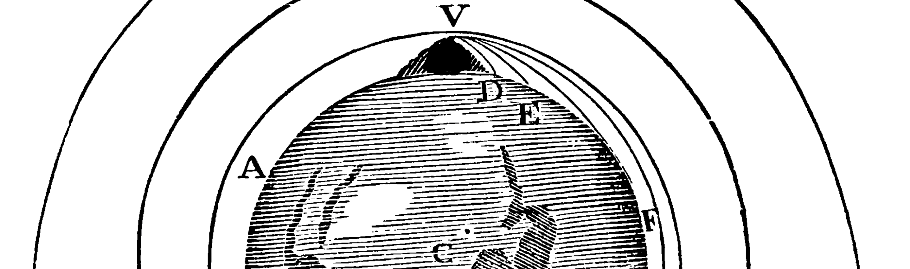

We will write programs to solve some of the most interesting problems in mechanics: free fall in a uniform gravitational field, free fall in Newton's Universal Theory of Gravitation, circular planetary motion, elliptical planetary motion, and the fuel burns needed for spacecraft launches. You will need no calculus. Python and Jupyter will do the calculations and graphing. However, you will need the same preparation (Math 12 or Level 3 Math Placement) that you would need if you were about to learn calculus. You will be scratching the surface of the field of computational physics that is used for problems as diverse as quantifying sea-level rise and modeling stellar formation.
Only the very simplest of physics problems can be described with algebra and geometry alone. That said, introductory physics is mostly taught in year-long courses using only algebra, the first semester of such a course focuses mostly on mechanics, and there is already more than enough content in a semester of algebra-based mechanics to prove daunting for most college students.
Furthermore, while daunting, such courses, even when mastered, are simultaneously deeply dissatisfying, because the unifying principles of physics required to tackle harder physics problems require the infinitesimal calculus. Calculus-based physics is mastered by an even fewer number of college students, and yet is one of the greatest and most technologically significant legacies of the human mind. Is there an alternative way to access it?
The answer, I and others believe is "yes," (or this syllabus would not be written), and the means is the field of computational physics, which is typically not taught until at least the fourth semester in an undergraduate's career, despite its fundamental simplicity and its centrality in 21st century physics.
In this course we will approach mechanics using computational physics instead of calculus. As noted in the brief course description above, we will tackle many of the same problems that are tackled in an introductory mechanics course: free fall in a uniform gravitational field, free fall in Newton's Universal Theory of Gravitation, circular orbital motion, elliptical orbital motion, and finally we will compute the transfer orbits that are used to do things like insert satellites into geosynchronous orbit.
Caption: Newton's thought experiment in Newton's Principia (source: Wikimedia)
We will be able to visualize the solutions to these problems in the same software as we do the Python coding by relying on Jupyter, a full-featured and mature scientific computing environment, which in turn relies on several mature scientific computing and visualization libraries: numpy, matplotlib, and pandas. You will be developing an intuition for calculus, not using the infinitesimal calculus, but by coding in Python to have the computer solve the problems using small temporal steps, and by studying the results of the calculations as they are presented graphically in Jupyter.
To motivate what we will be doing on the computer science front, first imagine that all sorts of people that were creative cooks ran all the restaurants, but that most of them actively avoided aquiring expertise in personnel management and food safety, and furthermore, that there were no city and county health departments that licensed restaurants.
That's the past, present, and future state of the software industry, except cooking is programming, personnel management is project management, and food safety is quality assurance and security. This sounds very bad, but the Wild West state of affairs is on balance a good thing for continued rapid innovation in software. The day software (or physics) becomes a licensed profession is the day it becomes moribund.
To lessen the chance that you will be the cause of the software equivalent of food poisoning, I will try to teach somewhat more than just programming. Specifically, I will have time to include some software development best practices, including documentation, coding style for readability and maintainability, unit testing, working with professional software development tools such as the debugger, and even do a bit of agile project management during the final project phase of the course.
To give you a chance to build Jupyter notebooks of your own, and to see what a huge variety of fields the methods we are learning can be applied to, the last week (25%) of the class will be devoted to creating and presenting final projects:
It would be pointless and circular if a course that is supposed to help you develop an understanding of mechanics and calculus required calculus as a prerequisite. However, the same math that makes one ready for calculus makes one ready for computational physics, and therefore pre-calculus (Math 12 or Level 3 Math Placement) is a prerequisite.
15% for each of 4 assignments. 15% for midterm (on 2nd Friday, Jan. 17). 25% for final project with presentation to class.
All twelve Jupyter Notebooks for the course are in the Loops and Orbits Repository on GitHub. GitHub is cloud hosting for git. You can view the notebooks online. Or you can make a free GitHub account and fork and clone the entire repository. Or you can follow the procedure on page 2 of my directions for using the lab iMacs to download the notebooks one at a time.